| 广告位 |
您现在的位置是：主页 > 体验 >
音乐平台们正在谋划一场内容的供给侧变革
2019-11-20 14:32体验 人已围观
简介 音乐行业从来不缺少故事。上游厂商席地而坐守住垄断局面、中游平台争夺版权陷入囚徒困境，这是过去很长一段时...
音乐行业从来不缺少故事。上游厂商席地而坐守住垄断局面、中游平台争夺版权陷入囚徒困境，这是过去很长一段时间的常态。
但最近几年，随着硬件产品和消费场景开始泛化，大娱乐时代用户的听觉需求也在暴涨。
暗流涌动之中，音乐平台们正在谋划一场内容的供给侧变革。
音乐行业的周期性起落
音乐真正成为一门性感的全球生意其实没有很久。从 1948 年黑胶唱片机的出现，到 1979 年索尼发售随身听（Walkman），因为传播介质的改变，音乐市场发生过几次不小的变革。
总的来说，这个产业的规模化经过了黑胶唱片、磁带、CD、数字音乐（流媒体）等数次迭代。猜猜看，受益于技术迭代，音乐市场本身的规模发生了怎样的变化？
下面这张图是近 50 年美国音乐产业的规模变化。整体来看，这块蛋糕似乎越做越小了。
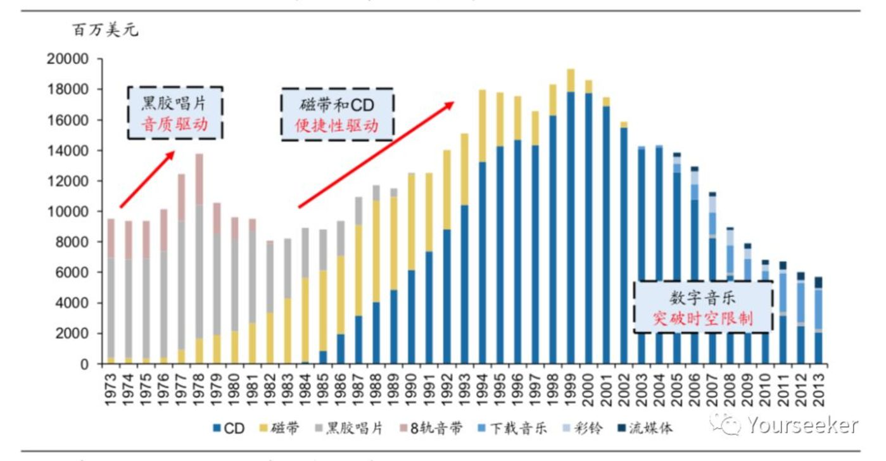
传播介质的改变与美国音乐产业的变迁
原因不难理解。从成本上来说，音乐正在摆脱传统的物理介质变得「线上化」、「虚拟化」，其生产成本在不断降低。加之流媒体音乐的渠道方为了追求用户，愿意免费提供服务，消费者收获到更好体验的同时，整个产业能够攫取到的收入不升反降。
但仔细看上面那张图，里面其实还隐藏着一个小趋势：伴随传播介质的变革，音乐产业的市场规模其实是周期性更迭的。
每一轮产业升级，都是新介质在存储密度、音质水平、用户体验等维度对旧介质的全方位碾压。而一旦升级完成后不久，整个行业又会迎来新一轮的复苏。
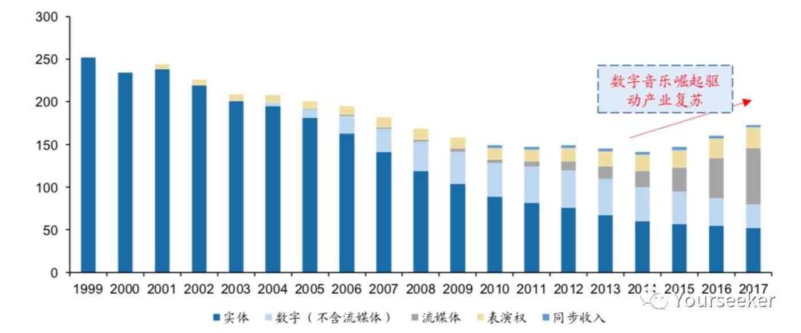
1999年-2017年全球音乐产业收入（亿美元）
恰好，当下这个节点正是新一轮复苏的发端。如上图，根据 2018 年 Global Music Report 的测算，从 2015 年起，全球音乐产业收入结束了长达 15 年的下滑趋势，到 2017 年，音乐产业收入已经连续增长 3 年。
背后原因主要是音乐流媒体增长迅猛。比如，2017 年美国音乐流媒体收入为 66 亿美元，在所有音乐类别中的收入占据首位。
这是音乐行业释放出来的一个信号。而接下来的问题变成了，既然这个产业正值复苏阶段，那么最多的钱流向了哪里？谁又在产业链上掌握了最强话语权？
产业链的霸主是上游唱片厂商，渠道方几乎不具备主动权
2018 年 3 月底，网易云音乐宣布全面下架周杰伦所有歌曲，一时间，云村用户反向强烈。
其实，这事早在数年前已有端倪：
2017 年 2 月 27 日，网易云音乐与日本最大娱乐集团爱贝克思（avex）达成独家战略合作，获得其在中国大陆地区的全面授权。
同年 5 月 16 日，腾讯音乐与全球三大音乐厂商之一的环球音乐达成战略合作，成为后者在中国大陆地区分销业务的独家合作伙伴。
接下来，网易和腾讯两家围绕音乐版权问题出现争端：
8 月 8 日，网易云音乐因未经许可提供吴亦凡最新专辑《6》的在线播放，被腾讯诉至法院。
8 月 17 日，网易云音乐相关运营主体因未经许可提供 200 多首华语畅销歌曲，被腾讯起诉。
8 月 24 日，杭州，网易云音乐反诉腾讯音乐旗下的酷我音乐侵权。
在两家发生版权之争后不久，9 月 15 日，国家版权局就网络音乐版权问题约谈了 20 余家境内外音乐公司、国际唱片业协会等主要负责人，要求授权公平，避免独家版权。
因为「窗口指导」，腾讯音乐、网易云音乐、阿里音乐相继达成了互授协议。目前，三方平台相互转授权的音乐作品达到各自版权数量的 99% 以上。
但关键还在于剩下的 1%。
尽管已经互授 99% 的版权内容，各音乐平台仍保留了约 1% 的差异化独家内容。因为平台版权内容早已不只千万级别，保守估计，1% 的独家歌曲在 10 万首以上。而这些音乐产业 KOL 作品的归属，将直接决定用户选择投奔哪家平台。
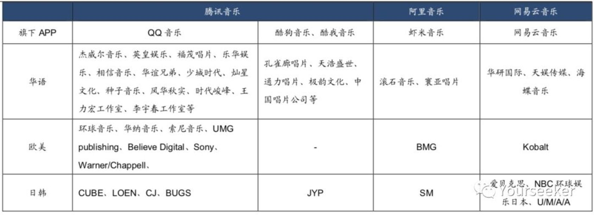
上图是截至 2018 年 9 月，腾讯、阿里、网易三家平台拥有的独家版权。可以发现，腾讯音乐处于绝对的优势地位。
事实上，腾讯音乐的版权优势源于其管理团队，旗下几乎囊括了在线音乐所有的元老级人物
腾讯音乐联席总裁谢振宇、副总裁陈琳琳，中国最早的在线音乐平台之一——酷狗创始人；联席总裁谢国民，曾任新浪音乐总经理，于 2012 年创建音乐版权公司海洋音乐；侯德洋，2007 年加入腾讯，后主管 QQ 音乐相关事务；吴伟林，原诺基亚音乐版权相关事务负责人，后加入腾讯音乐负责版权管理工作。
管理团队凭借自身多年从业经历，已与上游各大唱片公司建立起长期的友好关系：
海洋音乐创始人谢国民，法律背景出身，国内音乐盗版盛行时期就看到了版权的重要性。在唱片公司授权费较低且有资金需求时，他以低价签下了海蝶音乐、天浩盛世等国内头部唱片公司的长期独家版权；
腾讯音乐负责版权管理工作的副总裁吴伟林，在诺基亚时期就与华纳、索尼等唱片巨头熟识，在腾讯音乐签下三大唱片独家代理版权的过程中起到了重要推动作用。
不过，尽管腾讯音乐有了不错的开局，但独家版权的归属并不是一劳永逸的。为了争夺这个行业里的稀缺资源，近几年各大头部平台屡屡砸入巨资。
以国内较为知名的华研国际版权为例，其拥有艺人包括 SHE、飞儿乐队、林宥嘉等。2015 年，虾米音乐以 2000 万的价格获得华研国际三年独家代理权，2018 年合约到期后，网易云旋即将版权价格抬升 25 倍，至 5 亿元。
（这背后也有一段故事。2018 年 2 月 28 日晚，华研音乐发布公告：“本公司与中国著名互联网公司阿里巴巴集团签订的音乐授权合约即将到期，自 3 月 1 日起，公司将另行签署中国大陆地区之策略合作协议”。
言下之意很明显，它不打算和阿里续约。
至于阿里为何没能续约，主要是因为双方的利益诉求产生分歧，且阿里内部人事有变动。
2015 年版权大战最激烈时，阿里音乐抢到了华研在内的多家唱片公司独家版权。但它不愿对外做版权转授，只有在 2017 年国家版权局施压后，才与腾讯音乐达成版权互授协议。
要知道，唱片公司卖独家代理权，从来不只是想拿保底收入，他们还希望通过转授权拿到分成。结果不巧，华研在一个恰当的时候被阿里当成了对抗腾讯音乐“版权壁垒”的武器。
此外，15 年虾米音乐之所以能拿下华研的独家版权，也和联合创始人朱鹏飞到台湾洽谈有关。而到了 2017 年中，朱鹏在股权到期后选择套现离职。阿里后续也就没了继续谈判的砝码。）
单纯了解头部平台们的版权争夺战和投入费用也还不够，下面我们用一个具体的例子来估算，版权投入到底给头部音乐平台带来了多大压力：
以腾讯音乐为例，2017 年腾讯音乐以 3.5 亿美元+ 1 亿美元股权的代价获得环球音乐独家版权。假设版权有效期 3 年，以汇率 1: 6.80 计，腾讯音乐为环球支付的年均成本达到 10.2 亿。
但它不只为环球一家付费。假设这部分成本占其总版权成本的 1/4，那么腾讯音乐年均版权成本超过 40 亿。而腾讯音乐财报显示，其 2017 年全年在线音乐服务（订阅）收入也不过 21 亿。
当然还得注意，单纯的订阅收入对于腾讯音乐而言只是小头，其社交娱乐服务和其它（如直播）收入贡献了更多利润。如在 2017 年，这部分收入接近 53 亿。
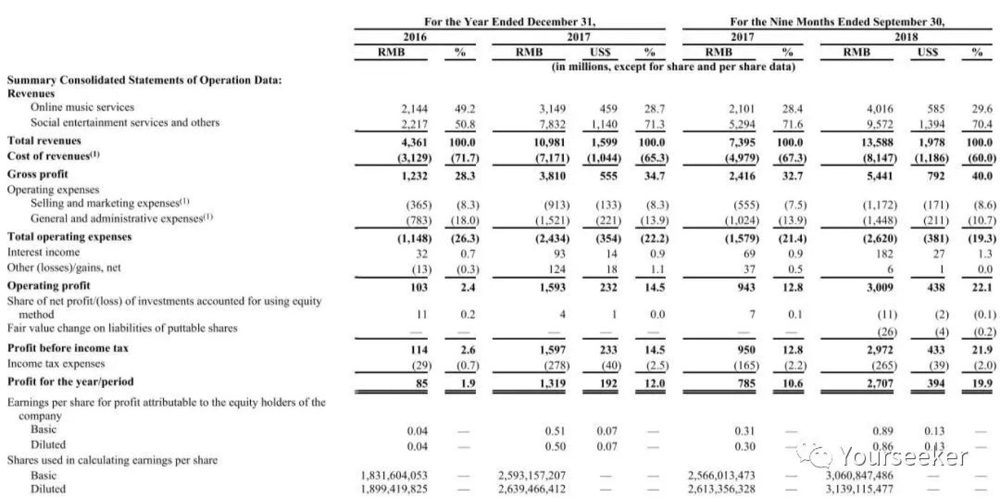
以上事实是想说明，自流媒体音乐被广为接受以来，平台方为了吸引并留住用户，无一不在版权上煞费苦心。正是这个原因导致他们陷入版权争夺的囚徒困境。而作为受益者，唱片厂商则牢牢占住了产业链的核心。
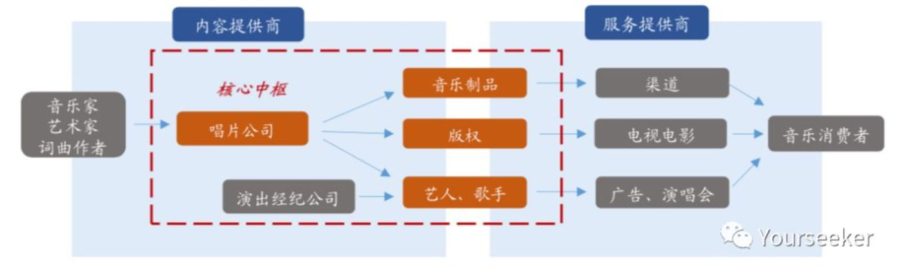
不仅国内如此，国外亦然。整个 20 世纪的美国音乐产业史，就是唱片公司巨头的一段垄断史。且随着时间推移，这种现象愈演愈烈。
2011 年，当时全球第四大唱片公司——百代（EMI）被分拆出售，唱片业务卖给环球，版权业务交由索尼。于是环球得到爵士厂牌 Blue Note，以及嫡系的 Capitol 和著名的 Virgin 唱片公司，而索尼得到 130 万首歌曲的词曲版权。
至此，三足鼎立，音乐市场的上游集中度得以进一步提升。
根据 Music & Copyright 的年度调查，在 2017 年整体音乐制品市场中（以实体和数字音乐收入统计），环球以 29.7% 的市场份额位列第一，紧随其后的是索尼音乐和华纳音乐，市场份额分别为 21.9% 和 16.2%，三大音乐公司合计市场份额接近 70%。
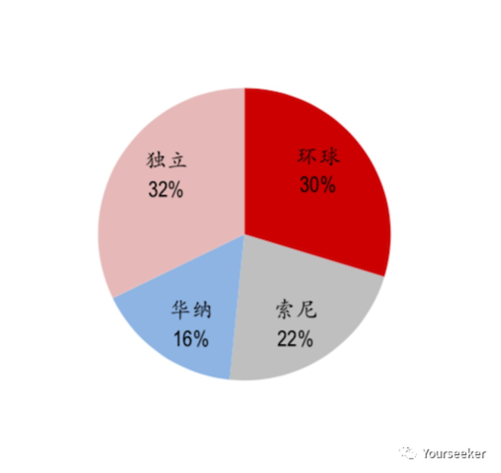
2017 年三大唱片公司市场份额
既然国外上游厂商的集中度更甚国内，Spotify、Pandora 等国外音乐平台又面临着怎样的压力？关于这一点，Ben Thompson 在 2018 年初《Lessons From Spotify》一文中就说过，他认为 Spotify 不是能带来太大价值的业务。
首先，所谓能够带来巨大回报的业务，一定得是那些边际成本够低的公司。因为到了后期，他们的用户、收入增长将远远快于成本增长，这样才能获得足够有意义的回报。如下图：
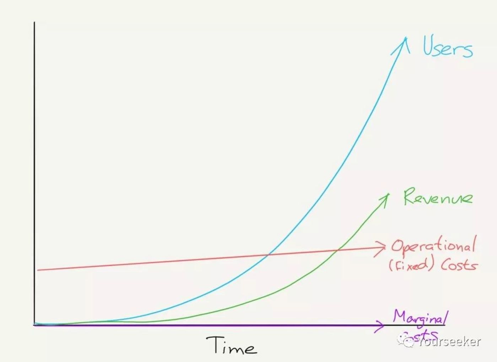
芯片的生意便是一例。沙子本身很便宜，但要制造芯片，前期需花费大量资金开发产品（比如研发费用、制造设备的购买费用等）。而一旦产品被市场接受，后期则可以相对较低的边际成本持续获利。
那为什么说 Spotify 这样的音乐平台不是好生意呢？
稍微做个介绍，Spotify 目前是全球范围内正版流媒体音乐平台的头号玩家。截至 2017 年底，已在加拿大、丹麦、法国、挪威、新加坡、日本、美国、香港、波兰、荷兰、西班牙、比利时等 61 个国家和地区开展业务。
早期，Spotify 收购音乐数据分析公司 Seed Scientific，通过系统针对每位用户推荐精准音乐的 Discover 功能叠加公司的电台功能，为用户提供了很好的音乐体验。
2016 年，Spotify 推出另一项算法产品功能，Release Radar。该算法驱动的播放列表每周五发布，为用户提供其关注的或者常听歌手最近发的新歌，推动用户参与和客户满意度的提升，进而维持付费用户的快速增长。
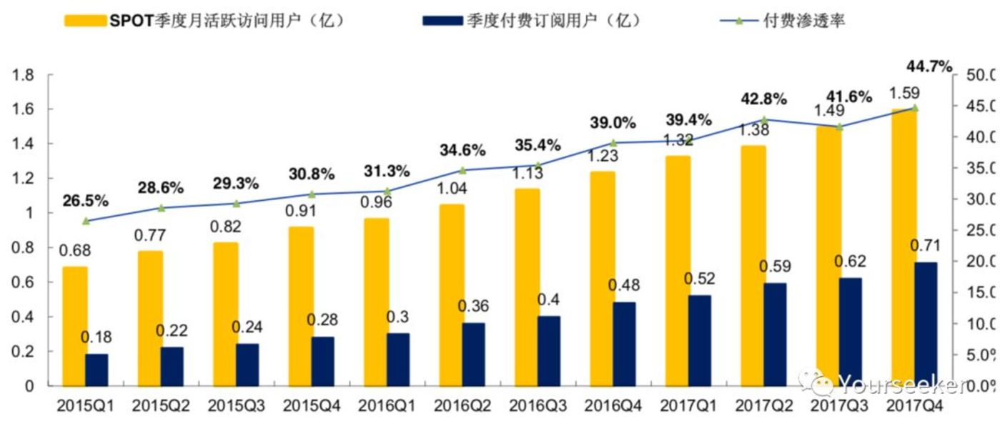
截至 2017 年 Q4，Spotify 月活跃用户已达到 1.59 亿，其中付费用户 7100 万（付费率 44.65%）；年度付费渗透率从 2015 年初的 26.5% 增至 2017 年末的 44.7%。
借助优质算法，Spotify 不仅在获客方面颇显成效，在用户粘性和流失率方面也有建树。
如下图，Spotify 的听众流失率从 2016Q1 的 6.9% 下滑至 2017Q4 的 5.1%，内容消费时间从 2016Q1 的 67 亿小时增至 2017Q4 的 114 亿小时。
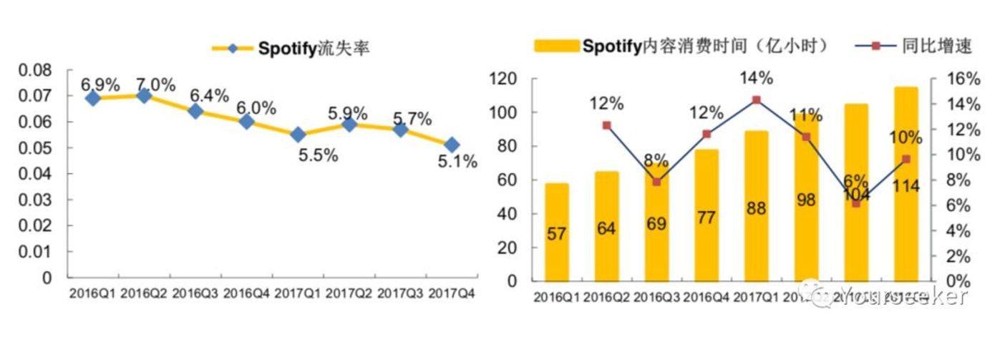
但繁荣之下也有隐忧：
其一，Spotify 近些年为了获客，陆续推出家庭与学生优惠计划，导致单用户平均收入（ARPU）不断下滑。其 2017Q4 的单用户平均收入下降至 5.24 欧元，同比下滑 13%。
换句话说，用户参与度的提高和流失率的降低，在一定程度上是靠牺牲短期 ARPU 换来的。
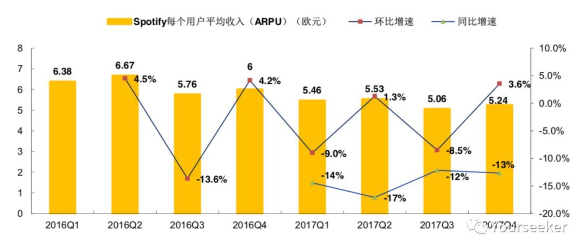
其二，不仅当下境况堪忧，大家估计 Spotify 后期也很可能没法有效降低边际成本。因为上游议价权过强，它很可能始终存在边际成本过高的问题。
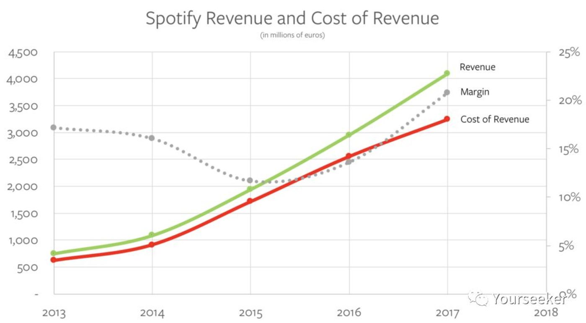
上图是过去几年 Spotify 的收入和成本变动情况。绿线代表收入，红线代表营收成本，两条线都是鲜明的上扬态势，反映出了赤裸裸的现实：Spotify 困于版权问题，其利润（几乎）完全受到上游唱片公司的制约。
为何当下音乐产业（更广泛地，听力赛道）值得重点关注？
备受推崇的前 KPCB 合伙人、互联网女皇 Mary Meeker 每年都会公布一份互联网趋势报告，虽然近几年其中的 insight 越来越少，但仍有一些宝藏值得深挖。
下面这张图来自 2005 年那份享誉硅谷的互联网趋势报告（当年 MS 内部颇为动荡不安）：
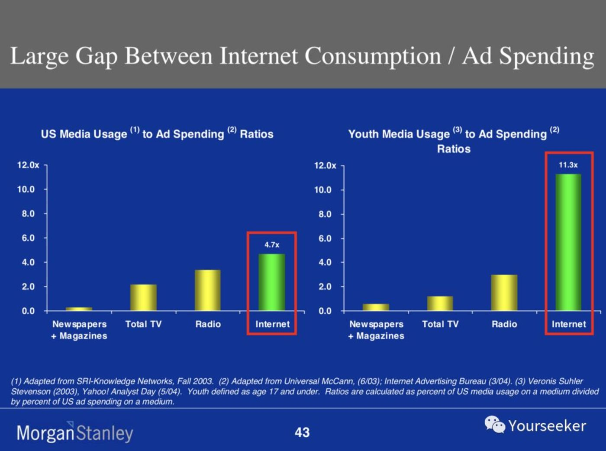
Mary Meeker 认为，2005 年前后，消费者在互联网上所消费的时间和注意力，远远超过了他们为此真正付出的广告成本。换句话说，当时的互联网广告市场大有潜力可挖。
她分别对纸刊广告、电视广告、广播广告、互联网广告做了测算，发现互联网广告的潜在承载量应该远高于前三者，而且如果单看青少年市场，互联网广告的优势更加明显。
要注意，这可不是拍脑袋给出的主意，而是实打实地用数字做了科学预测：互联网广告拥有巨大潜力等待释放。
5 年后（2010 年），Mary Meeker 针对同一问题的研究仍在继续。这一次她分析的是上述四种广告所占据的用户时长和本身的市场规模大小。
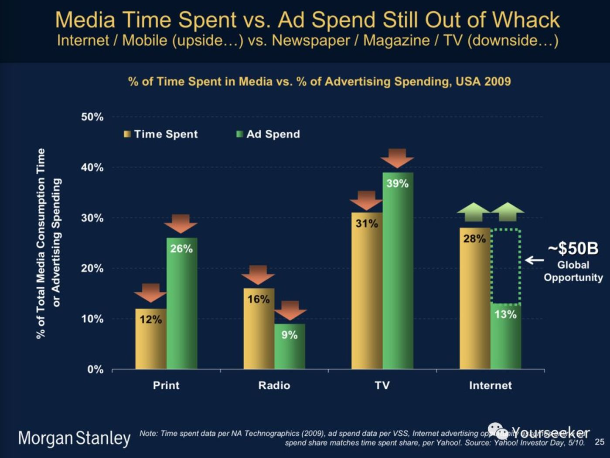
结果她发现，仅占 12 % 用户时长的纸质广告竟然吃下了 26% 的广告市场，而占据 28% 时长的互联网广告，市场规模刚刚达到前者的一半。
要知道，这个阶段，谷歌凭借 AdSense 已在互联网广告领域打下了一片不小的天地。但 Mary Meeker 坚持认为：被吸引、聚焦到互联网的注意力，依然是一片未被重视的富矿。全球范围内尚有 500 亿美金的空白市场亟待填充。
时至 2018 年，这个数字变得更有意思了。
为什么这么说？随着移动互联网的爆发，Mary Meeker 也早已把互联网广告市场拆分为桌面端（Desktop）和移动端（Mobile）。她发现，后者不仅超越了前者，且直到现在，移动端广告依然是一片相对蓝海的市场。
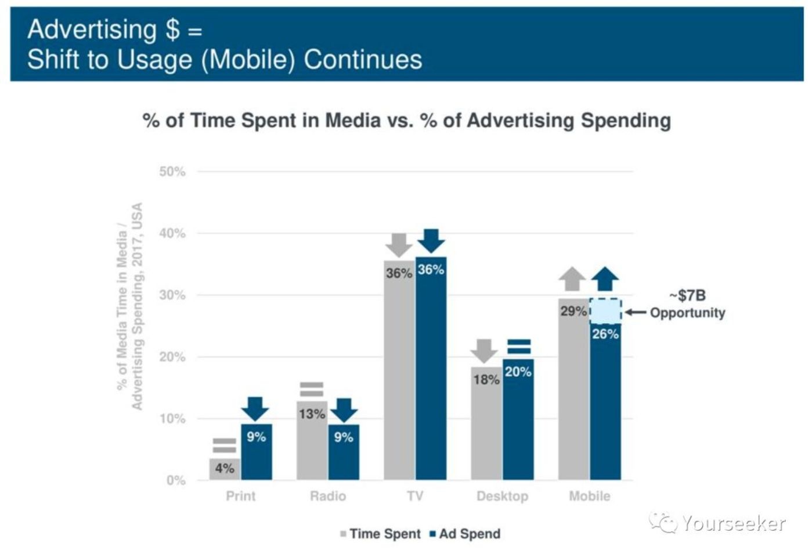
以上是 Mary Meeker 的一个观察思路。我真正想说的是，2010、2018 两张图中，还有另一片空白，Radio——广播广告。
综合考虑用户使用时长和广告市场规模，纸质广告、电视广告、互联网广告中的桌面端，都已经「超载」。仍有增长潜力可挖的或许就在广播广告和互联网广告中的移动端市场。
那么，中游平台是否意识到，同属音频形式的音乐市场也许有吸收一部分同类广告的可能？换句话说，音乐市场能否再现一个趣头条？
除了广告主一端，内容受众这一端事实上也发生了新变化。
据统计，2017 年有 4400 万美国人使用智能音箱。而研究机构 eMarketer 的预测更为大胆：到 2020 年，美国智能音箱用户将达到 7700 万。
至于国内，随着阿里（天猫精灵）、京东（叮咚）、小米（小爱同学）纷纷入局，智能音箱正在成为家庭娱乐新的接入点。这样一来，它们又将扩展多少场景、承载多少音频内容？甚至于，给音乐（类似音遇的玩法）带来多大的革新和想象空间？
以上内容是想说明，音频广告或许会发生迁移。而当前这个大娱乐时代，场景、技术都在迭代，人们想听的需求暴涨，但是内容供给（似乎）还跟不上。
音乐产业正在兴起的供给侧改革
存量角度：豆瓣 FM 的「头条」梦想
不久前，豆瓣 FM 获得新一轮投资。据他们的说法，后续希望深度挖掘用户在不同维度的音乐喜好数据，以更加智能的算法来推荐音乐。
这事怎么理解呢？我们前面说过，在很长一段时间里，音乐产业链的上游——唱片厂商占据了极大主动权。即便是巨头平台，也因受制于内容版权，被迫沦为「打工仔」。
因此，心有不甘的音乐平台们自然要寻找机会增强话语权。
随着流媒体音乐的兴起，作为优质渠道方的头部音乐平台逐渐发现，自己已然聚拢了一大批具备相似需求的用户。
在这个时候，头部音乐平台不仅做好本分工作（为用户提供专业、优质的服务），还在往两个方向尝试：
1）将业务延伸至上游的音乐发行和音乐人培养，以期反制大的唱片厂商。
国内音乐平台们为了争抢新兴原创音乐人、摆脱唱片公司掣肘，争相推出原创音乐人计划：比如腾讯音乐的「原力计划」、网易音乐的「石头计划」、百度音乐的「伴星计划」、虾米音乐的「寻光计划」。
从平台角度考虑，这不仅有助于他们在上游获得更多优质内容，或许还能在下游进一步向线下演唱会、演出市场布局。
这或许可以帮助他们推动音乐产业价值链的改变，进而打破唱片公司的主导局面。
2）借由平台的推荐功能和分发优势，削弱头部效应，增大非头部歌曲的曝光。
举个例子，下图借由洛伦茨曲线（Lorenze curve）展示了国外音乐平台过去几年的努力。
洛伦兹曲线是美国统计学家 M.O.洛伦兹 1905 年提出的，用于研究国民收入在国民之间的分配问题。运用在音乐行业，我们可以据此测算歌曲销量在总销量的占比情况：
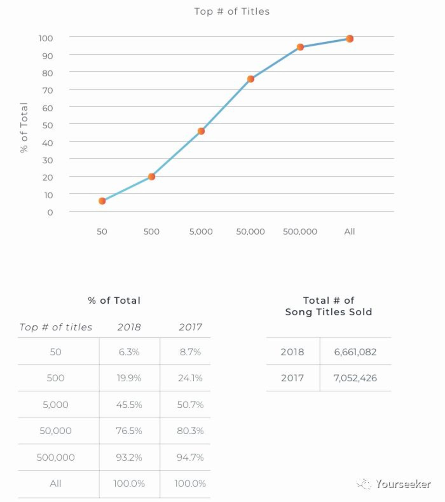
来源：BuzzAngle Music 2018 US Report Industry
对比美国 2017 和 2018 音乐平台的数据可以发现，
2017 年 Top 50 歌曲的销量占比是 8.7%，一年后降至 6.3%；
2017 年 Top 500 歌曲的销量占比 24.1%，一年后降至19.9%。
也就是说，因为音乐平台掌握了用户，能够依据其喜好和特点，部分程度上影响歌曲被收听的情况。所以他们正在将原本集中在头部歌曲的需求打散，（在不影响用户体验的情况下）适当分配给长尾歌曲，从而增大新兴歌曲被发现和收听的概率。
但可想而知，音乐平台的这些操作，也使得他们与唱片公司的间隙日益加深。虽然大唱片公司眼下能够安然拿到来自平台的巨额版权费用，但对于其谋求内容主动权的野心，也不会视若无睹。
因此，二者之间的博弈接连不断，老牌唱片厂商屡屡放出狠话，试图压制大音乐平台们的野望。
增量角度：拓展内容品类，以期掌握议价权
如果在音乐市场本身难以找到破局点，Spotify 心想，不如试着拓宽内容品类怎么样？
不久前，有两笔由 Spotify 主导完成的收购案引发了海外音乐界的小小震动。它看上的两家，一个叫 Gimlet，主业是播客（Podcast）内容制作，另一个 Anchor，比前者业务稍广些，还提供货币化服务。
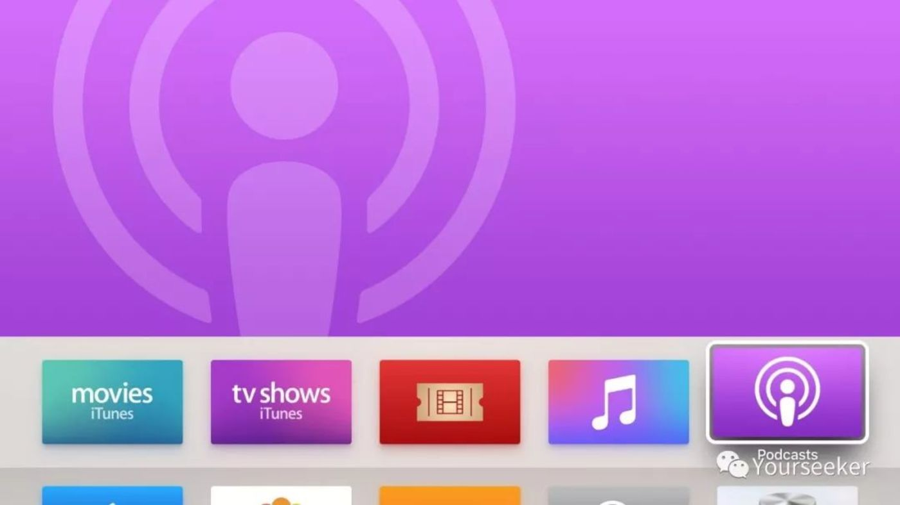
和音乐不同，播客市场的上游比较分散，内容生产者们无法拧成一股绳，合力抗拒平台的收编。
再者，播客市场的受众颇为广告主喜爱。原因有二：
第一是 2017 年全美国听过 Podcast 这个词的人超过 60％，而 15％ 美国人都是周活听众（据此估算美国周活听众 4200 万）。
第二，播客受众整体偏年轻（51% 用户小于 34 岁），偏有钱（45％ 的人年收入超过 75000 美元），偏有文化（57％ 都是大学以上学历），而且喜欢社交分享，有较大可能把好的播客内容安利给同伴。
更为可贵的是，当前播客市场的货币化程度相当低，借由新的工具和服务，其货币化效率有相当大的提升潜力。
也正是这些原因，Spotify 掌舵人 Daniel Ek 在最近一次财报会议表示，Spotify 的一个远景目标是未来希望 20% 内容都属于播客类型。而这主要依靠新收购的播客内容公司 Gimlet 来实现。
即便我们都能清醒意识到，播客业务短期内还无法真的对音乐市场产生威胁。但在「苦版权久矣」的音乐平台们看来，这也许是一道曙光。
一个有趣的变化是，就在最近，Spotify 的 CEO 和 CFO 在被问及播客相关问题时，都坦诚地以 Netflix 的运营逻辑讲给大家听。要知道，如果是以前，为了避免伤到上游唱片公司的心，他们一直都对外强调 Spotify 与 Netflix 的不同。
Spotify 求变的背后，还有一个细节引人深思。其 CEO 去年曾讲过：
“在很多人看来，Netflix 是借由手中的内容加固了自己的护城河。但这个看法是错的。他们能赢是因为他们跑得比别人快，他们的创新想法和节奏把对手远远抛在了身后。
我们如果能站稳脚跟，也会是因为自身的节奏快到所有人都跟不上。”
【来源：Yourseeker 作者：曾翔】
Tags： 音乐平台
下一篇：没有了
| 广告位 |